00 / CANONICAL ROUTE SNAPSHOT
THREE SCENES.
ONE RUN THAT REMEMBERS.
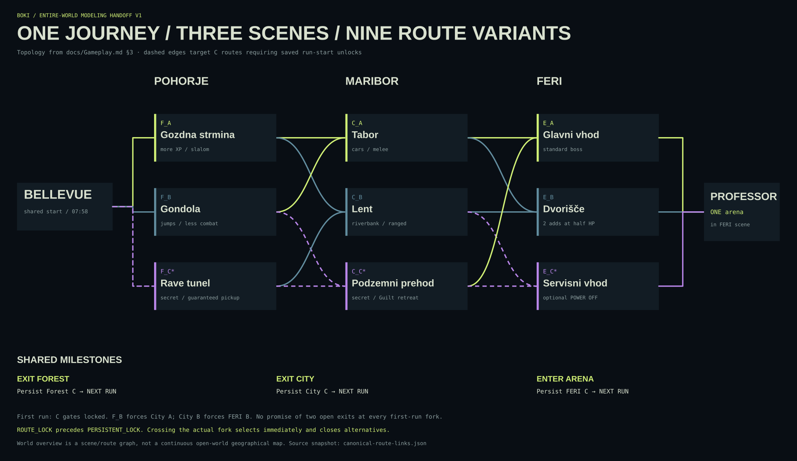
The graph is generated from Gameplay.md section 3. C routes require the saved run-start unlock snapshot. Whole-scene floorplans are topology diagrams, not geographic or travel-distance scale maps.

01 / WORLD MODEL REFERENCE
BELLEVUE / SHARED START


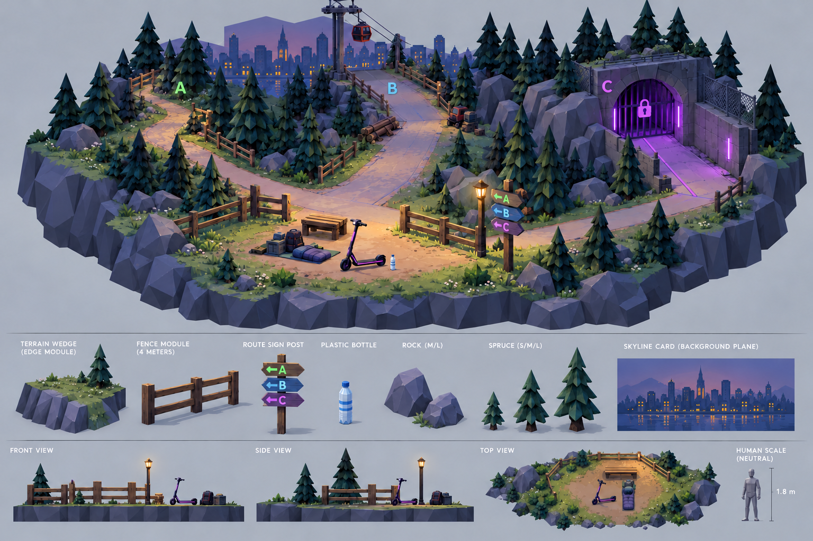
PROPOSED DIMENSIONS + CANONICAL PACING
| Ground kit grid | 4 × 4 m |
|---|---|
| Safe lane clear width | 4 m proposal |
| Fence section | 4 m long |
| Turn / fork pocket | 8 × 8 m proposal |
| Intro timing | 20–30 s canonical |
Level1_Pohorje (proposed)
Build and reuse
- Bellevue overlook is part of the Pohorje scene, not a fourth gameplay scene.
- Use faceted ground tiles, bank wedges, spruce, rock and a simple skyline card.
- Place bottle, scooter and intro markers off the collision-critical ride lane.
- One clear approach reaches the three-way fork; C is initially locked.
Collision and clearance
- Use continuous ramp collision under scenic height changes.
- Fence/trunk blocking uses simple boxes or capsules.
- Keep the safe approach free of snagging decoration.
- No unapproved fall-death or checkpoint mechanic is introduced.
Unity bindings
- PlayerStart + IntroCamera markers + SafeApproach landmarks are proposed.
- Intro skip lands at the same safe start with correct input state.
- Fork gates use F_A / F_B / F_C route identifiers.
- Watch remains 07:58 through Pohorje.
Illustrated start geometry is a proposal. The prologue is skippable; the same run state reaches the fork.
02 / WORLD MODEL REFERENCE
POHORJE / LEVEL LAYOUT


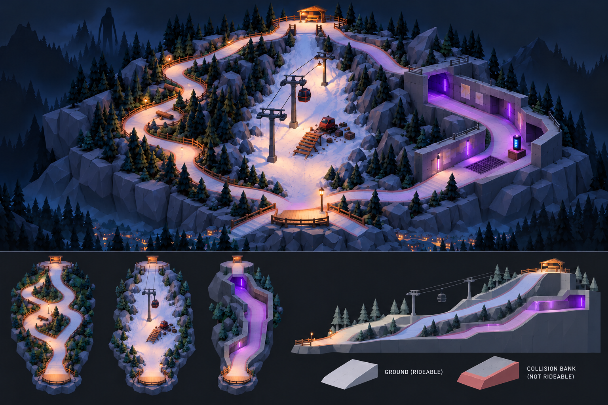
PROPOSED DIMENSIONS + CANONICAL PACING
| Travel surface grid | 4 m proposal |
|---|---|
| Forest clear lane | 3–4 m proposal |
| Tunnel clear W / H | 3 / 3.5 m proposal |
| Turn pocket | 8 × 8 m proposal |
| Target pacing | 2–3 min canonical |
Level1_Pohorje (proposed)
Build and reuse
- A: winding spruce slalom, logs, melee clearing and Guilt behind the player.
- B: wider service slope, static gondola silhouette, maintenance cart and broken planks.
- C: short rave tunnel, grate set piece, two stronger enemies and one guaranteed battery or XP pickup.
- All branches merge into one city-facing exit; no route switching across branches.
Collision and clearance
- Use smooth walkable ramp surfaces, with simple banks blocking shortcuts.
- Treat gaps as movement-test dimensions; artwork does not prescribe a lethal pit.
- Keep jump landings and the approach to the shared exit clear.
- Use primitive trunk, rock and cart blockers; do not collide with every twig.
Unity bindings
- Fork: F_A / F_B / F_C, snapshot gate availability.
- Crossing an available gate records choice immediately and closes alternatives.
- ExitForest saves Forest C globally for NEXT RUN, then changes scene once.
- Regular enemy cap 8. Guilt uses a few offscreen reposition anchors.
Open editable route floorplan
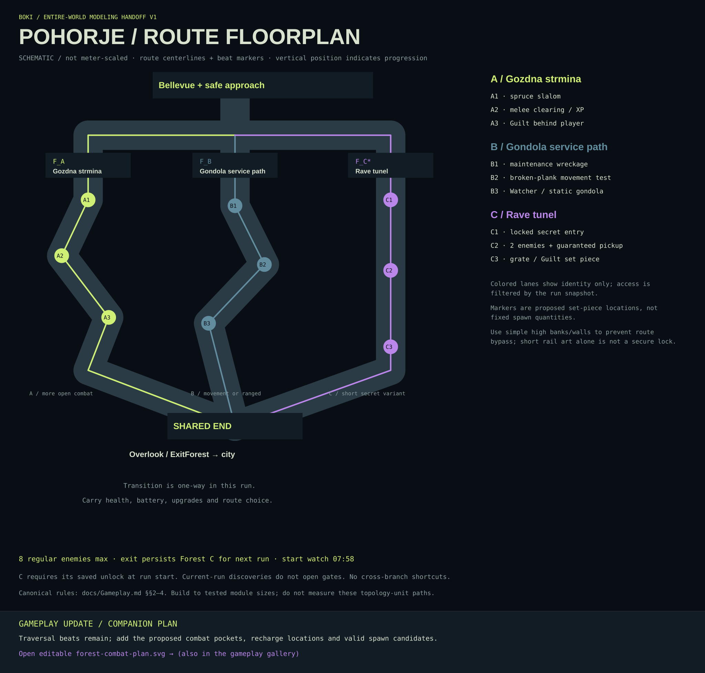
Download floorplan SVG ↗Editable floorplan controls route topology. View lengths and vertical exaggeration in concept art are not measured gameplay distances.
03 / WORLD MODEL REFERENCE
POHORJE / MODULAR MODEL KIT


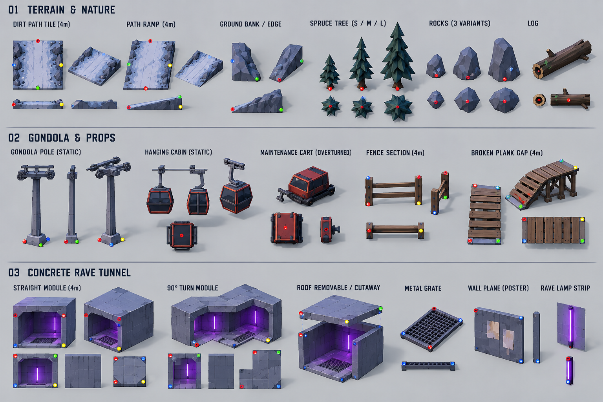
PROPOSED DIMENSIONS + CANONICAL PACING
| Path tile | 4 × 4 m |
|---|---|
| Ramp | 4 m run / 0.5 m rise |
| Tunnel bay | 4 m length |
| Fence bay | 4 m length |
| Texture target | 256² tiling / 512² atlas |
Reusable forest + concrete kit
Build and reuse
- Make separate render meshes for ground, banks, spruce, rocks, logs and fence.
- Gondola pole/cabin remain static decorative meshes.
- Keep maintenance cart and jump planks separate from terrain.
- Rave tunnel uses straight, corner, grate and poster pieces shared with city/FERI.
Collision and clearance
- Ground/ramp collision is authored separately from decorative facets.
- Spruce trunk capsule; rock simple box/capsule combination.
- Fence is continuous blocking volume, not individual rail colliders.
- Tunnel floor/walls use boxes; roof may be a separate ceiling blocker.
Unity bindings
- Floor tile origin: lower-left corner at finished floor Y = 0.
- Snap_S / Snap_N at bay centerlines, facing outward.
- Door/grate origin at hinge if animated; otherwise fixed leaf.
- Use material sharing; add unique geometry only for silhouettes.
Triangle and texture figures in the asset catalog are proposed authoring budgets, not measured performance.
04 / WORLD MODEL REFERENCE
MARIBOR / LEVEL LAYOUT


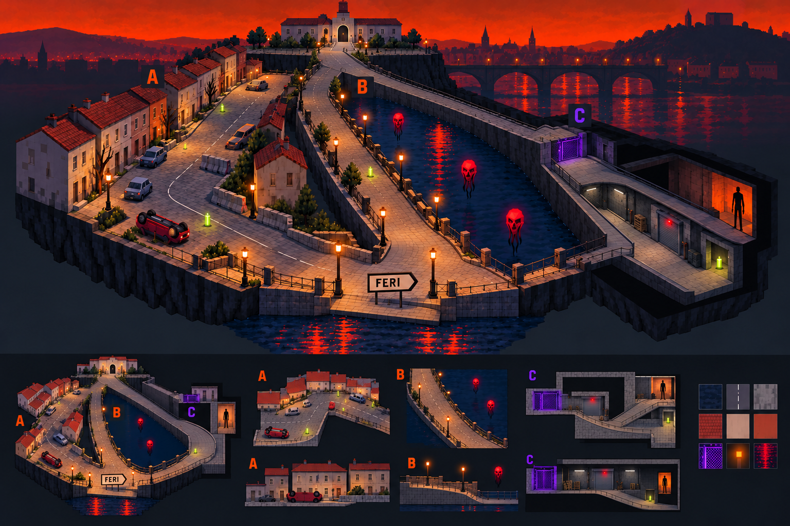
PROPOSED DIMENSIONS + CANONICAL PACING
| Street clear width | 6–8 m proposal |
|---|---|
| Riverside lane | 3 m proposal |
| Underpass clear W / H | 3 / 3.5 m proposal |
| Encounter pocket | 12 × 12 m proposal |
| Target pacing | 3–4 min canonical |
Level2_Maribor (proposed)
Build and reuse
- A / Tabor: facade-lined car slalom, two larger melee groups and a car-ramp escape.
- B / Lent: flat river plane, two narrow riding paths, bridge silhouette and ranged Watchers.
- C / Podzemni prehod: fence opening, closing door, Guilt at far end and a side escape opening.
- All variants reach one FERI sign/transition; no water crossing or new travel mechanic.
Collision and clearance
- Continuous curb ramps on the ride lane; perimeter rails block water access.
- Cars use simple boxes; ramp traversal uses a distinct smooth surface.
- C side escape must connect to the shared exit, not become a dead end.
- Separate scenery-only facades/skyline from actual playable boundaries.
Unity bindings
- Filter City gates from saved Forest choice and run-start unlock snapshot.
- ExitCity saves City C for NEXT RUN and transitions once.
- Watch changes toward 07:59 at the end of the city.
- Regular enemy cap 12; instantiate small groups rather than all routes at once.
Open editable route floorplan
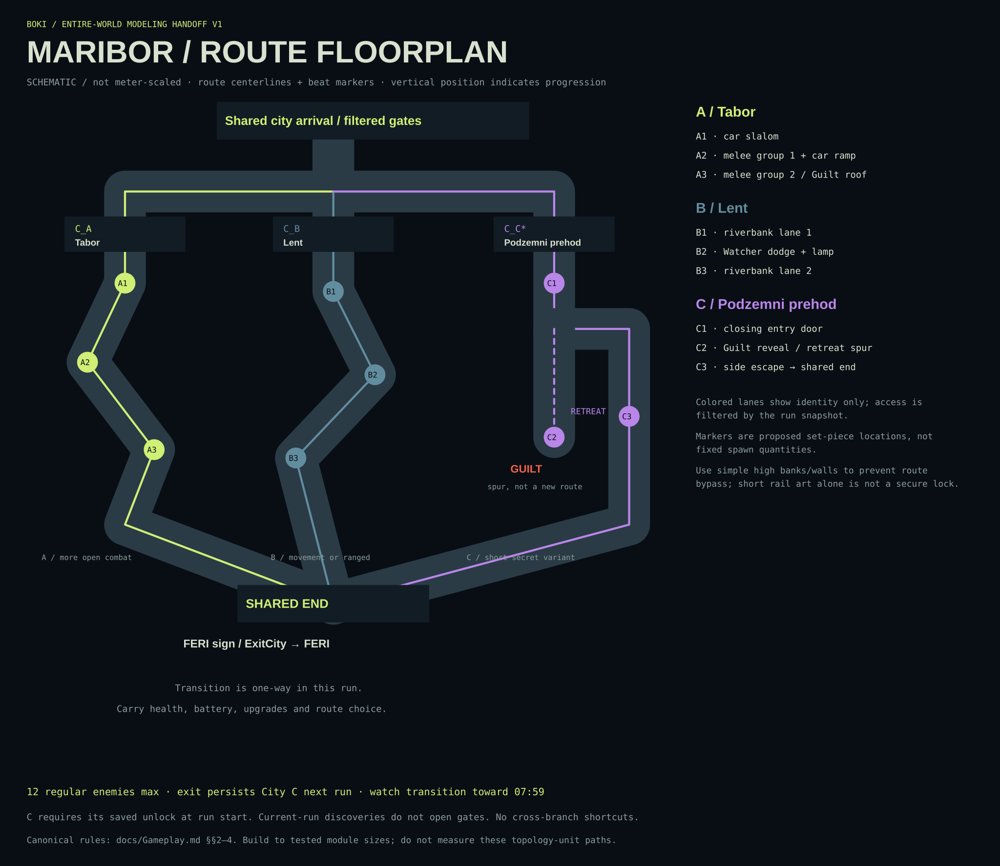
Download floorplan SVG ↗The setting evokes Maribor; these routes are not a geographical reconstruction. Timings require later playtesting.
05 / WORLD MODEL REFERENCE
MARIBOR / MODULAR MODEL KIT


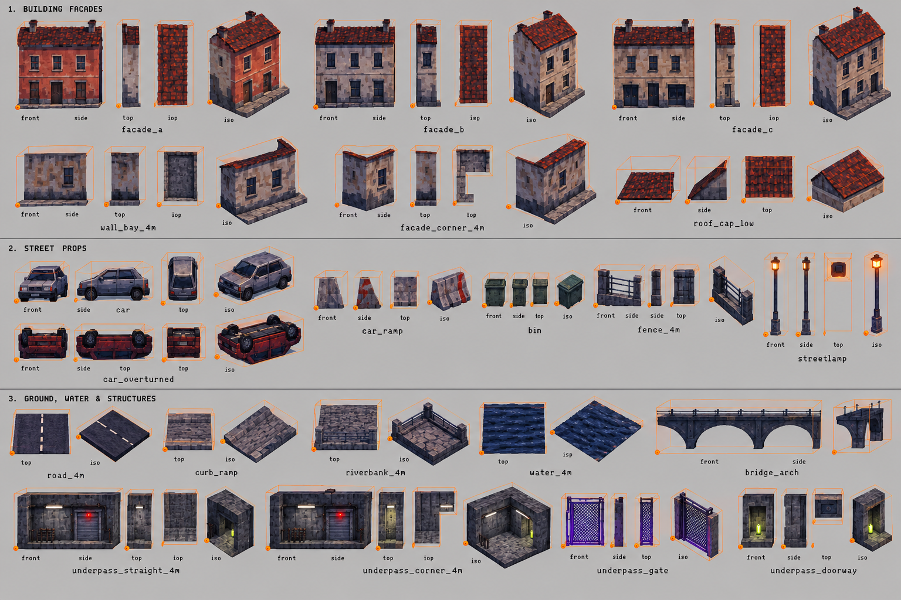
PROPOSED DIMENSIONS + CANONICAL PACING
| Facade bay | 4 m width |
|---|---|
| Road tile | 4 × 4 m |
| Riverbank bay | 4 m length |
| Underpass bay | 4 m length |
| Texture target | 256² tile / 512² atlas |
Reusable city street + river + underpass kit
Build and reuse
- Three reusable facade fronts plus corners and roof silhouette caps.
- One compact car mesh with upright/overturned placement variants.
- Separate road, curb-ramp, riverbank edge, railing and flat water plane.
- Underpass reuses concrete straight/corner/door pieces; no deep building interiors.
Collision and clearance
- Facade/rail boundaries are coarse boxes, not window-level meshes.
- Overturned cars use a few boxes; keep movement openings legible.
- Water is a visual plane behind a physical boundary, with no new swimming rule.
- Keep side-escape aperture and tunnel corner collision unobstructed.
Unity bindings
- Snap module origins to meter grid; use shared bay end markers.
- Streetlamp emitter does not imply every lamp needs a dynamic light.
- Spawn/pickup markers are empty transforms separate from meshes.
- Keep car-ramp collision distinct from the decorative car body.
Art lighting is mood reference. Build with the project's few-light and short-view-distance constraints.
06 / WORLD MODEL REFERENCE
FERI / LEVEL LAYOUT


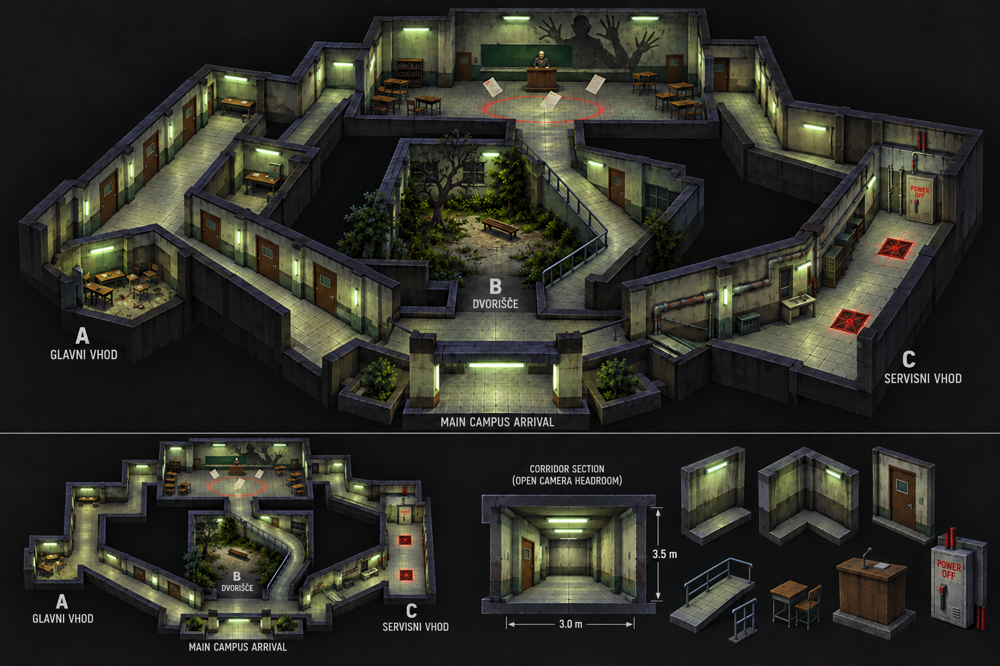
PROPOSED DIMENSIONS + CANONICAL PACING
| Corridor clear width | 3 m proposal |
|---|---|
| Corridor clear height | 3.5 m proposal |
| Door clear W / H | 2.4 / 3 m proposal |
| Ramp | 4 m run / 0.5 m rise |
| Approach pacing | 1–2 min canonical |
Level3_FERI (proposed)
Build and reuse
- A / Glavni vhod: repeated corridor and two small melee groups.
- B / Dvorišče: courtyard, ambush pocket, ramp and side corridor.
- C / Servisni vhod: utility hall, exactly two floor traps and optional POWER OFF panel.
- All three visibly connect to the same classroom landing and boss arena.
Collision and clearance
- Use ramps in place of stairs; avoid decorative lips in the scooter lane.
- Keep pipes, planters and doors out of the clear corridor envelope.
- C panel interaction must not block the route or require an extra new puzzle.
- Keep the entry and arena floor open for the scooter and camera.
Unity bindings
- Filter FERI gates from City choice and run-start unlock snapshot.
- Arena entry saves FERI C for NEXT RUN; boss starts only once.
- A standard; B adds two melee at 50% boss HP; C panel use starts boss at 85% HP.
- Regular enemy cap 8 plus boss. Disable Guilt chase AI during boss.
Open editable route floorplan
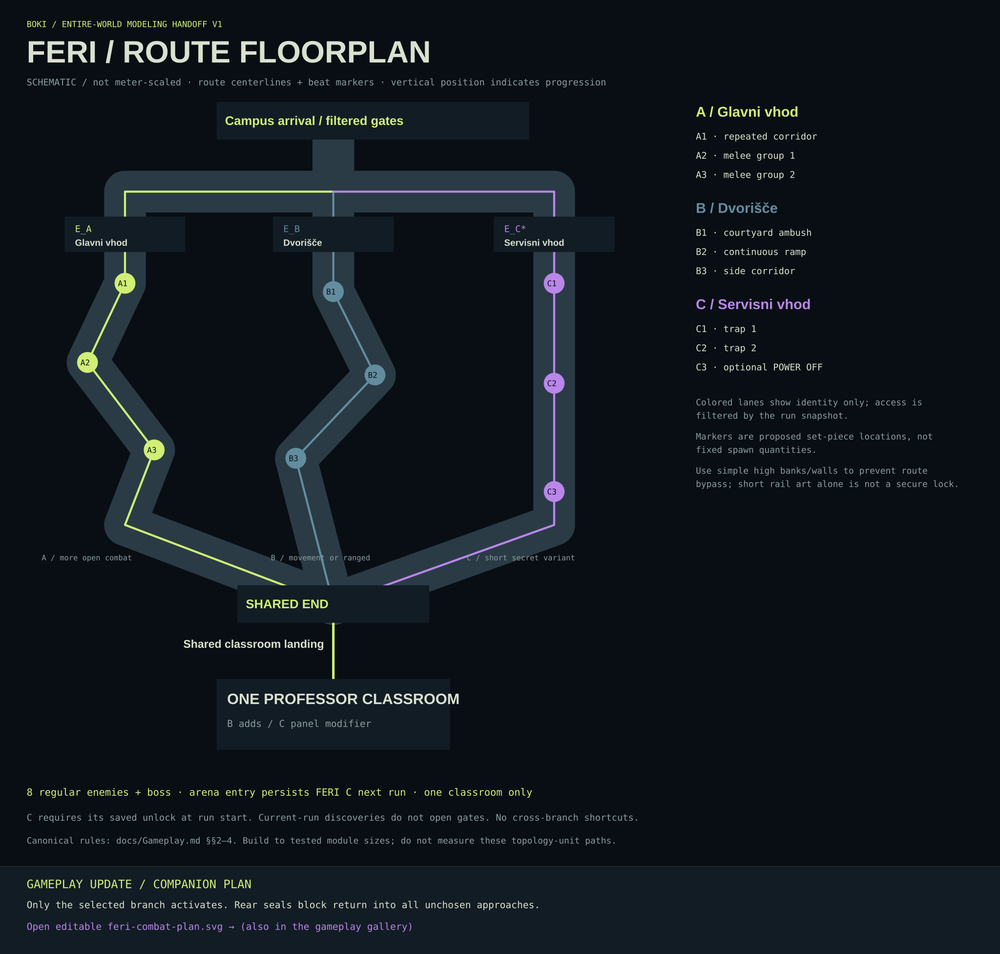
Download floorplan SVG ↗Classroom belongs to the FERI scene. The three entrances change a modifier, not the number of arenas.
07 / WORLD MODEL REFERENCE
FERI / MODULAR MODEL KIT


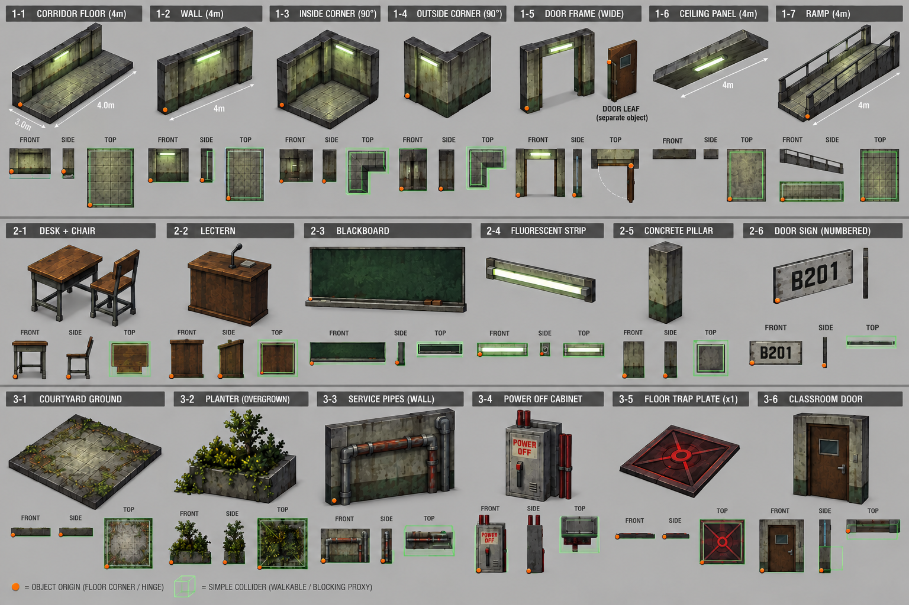
PROPOSED DIMENSIONS + CANONICAL PACING
| Structural bay | 4 × 4 m |
|---|---|
| Wall thickness | 0.2 m proposal |
| Clear corridor W / H | 3 / 3.5 m proposal |
| Door clear W / H | 2.4 / 3 m proposal |
| Texture target | 256² tile / 512² atlas |
Reusable corridor, courtyard and classroom kit
Build and reuse
- Straight corridor, inside/outside corner, floor and removable ceiling panels.
- Door frame/leaf share one aperture; put leaf origin at hinge.
- Desk/chair, lectern, board and fluorescent strip are reusable props.
- One floor-trap mesh is instanced twice on C; POWER OFF cabinet has separate switch.
Collision and clearance
- Boxes for floors, walls, desks and door blockers; smooth ramp surface.
- Separate art ceiling from camera/physics boundaries and test the follow camera.
- Trap marker footprint must agree with future damage logic.
- Do not build furniture collision through the central dodge floor.
Unity bindings
- Floor-corner origins; consistent Snap_N/E/S/W marker names.
- DoorOpenMarker defines a tested leaf position clear of the lane.
- PowerOffInteract marker stays reachable without entering trap geometry.
- One shared material palette; no per-door unique texture requirement.
Removable ceiling in a cutaway sheet is a presentation aid; camera visibility and collision must be tested in the actual scene.
08 / WORLD MODEL REFERENCE
THE DEADLINE / SHARED ARENA


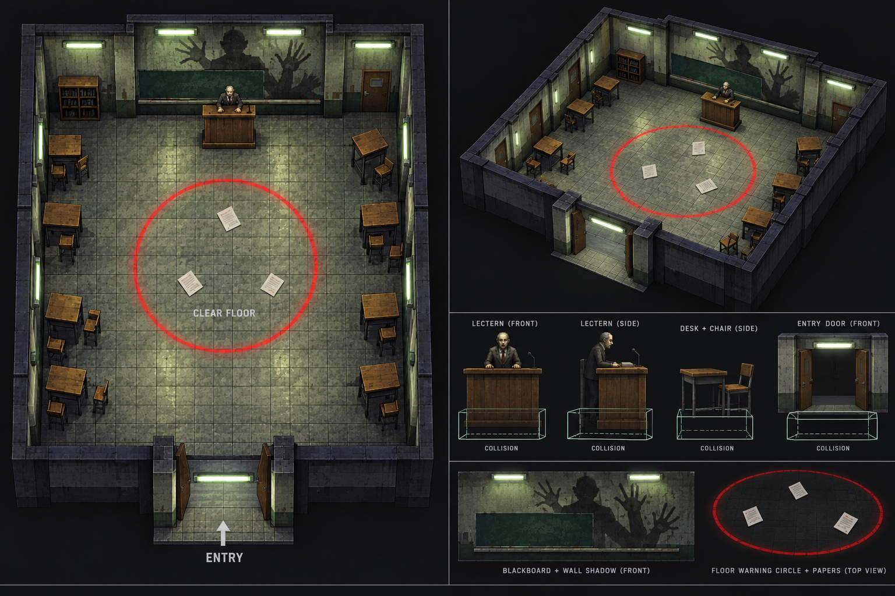
PROPOSED DIMENSIONS + CANONICAL PACING
| Room footprint | 24 × 20 m proposal |
|---|---|
| Ceiling clearance | 4 m proposal |
| Central clear floor | 14 × 12 m proposal |
| Shared door W / H | 2.4 / 3 m proposal |
| Boss pacing | 1–2 min canonical |
Inside Level3_FERI (proposed)
Build and reuse
- Professor and lectern sit near far wall; Guilt remains a backdrop.
- Desks/chairs occupy perimeter strips, preserving a clear central dodge zone.
- Single shared door/landing accepts every FERI route.
- Separate warning-ring and projectile art from classroom geometry.
Collision and clearance
- Flat floor without dais, stairs or thresholds in the ride lane.
- Simple furniture boxes, with no dead-end pocket around lectern.
- Warning art radius must match the combat system's actual hit area.
- Use arena walls for collision; wall-shadow art has no chase collider.
Unity bindings
- ArenaEntry persists FERI C, locks repeated start and disables chase logic.
- Exam Barrage releases 3 slow sheets; Deadline Slam warns for 0.8 s.
- At 50% HP attacks become a little faster; B adds two melee once.
- POWER OFF modifier applies only when activated on E_C.
Open dimensioned classroom floorplan
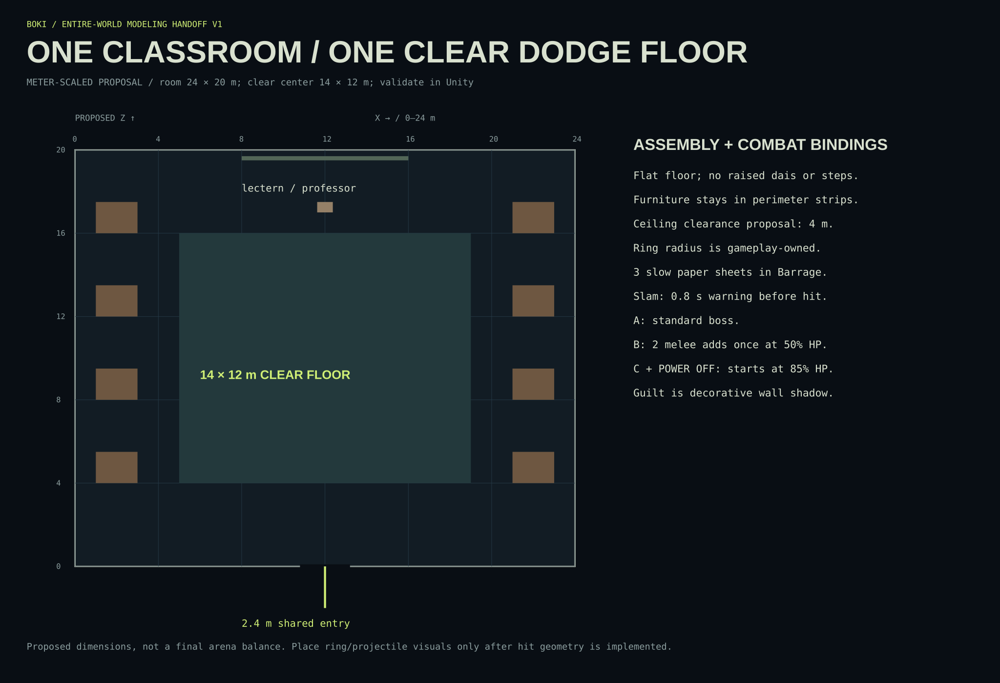
Download arena plan SVG ↗Room dimensions and clear-floor footprint are a first graybox proposal; tune them with actual movement and boss timing.
09 / WORLD MODEL REFERENCE
GATES / LOCKS + SHARED PASSAGES


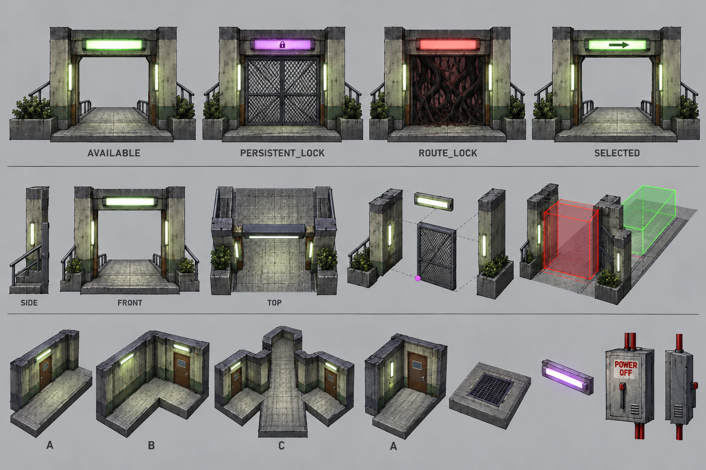
PROPOSED DIMENSIONS + CANONICAL PACING
| Gate clear W / H | 3 / 3.5 m proposal |
|---|---|
| Passage bay | 4 m length |
| Gate leaf thickness | 0.12 m proposal |
| Fork pocket | 8 × 8 m proposal |
| State priority | ROUTE_LOCK first |
Shared route-gate and concrete module family
Build and reuse
- One frame/leaf/sign family with AVAILABLE, PERSISTENT_LOCK, ROUTE_LOCK and SELECTED appearances.
- Concrete straight, corner and side-door modules are shared across C routes.
- Render mesh, blocking collider and selection trigger are separate children.
- Dark roots/shadow barrier is art; a real blocker closes the path.
Collision and clearance
- Locked gates: blocker enabled, selection trigger disabled.
- Available gates: passable opening, active selection trigger.
- Selected route remains traversable; alternatives close immediately.
- Place the selection trigger beyond the leaf, without overlap with other route triggers.
Unity bindings
- Connection check precedes persistent-unlock check; show only the winning lock reason.
- SELECTED applies only after crossing the actual selection trigger.
- Unlock flags are snapshotted at run start; discoveries do not open current-run C gates.
- POWER OFF is an optional E interaction on FERI C, not a universal gate key.
Gate names and scene markers in this pack are proposals. Canonical state behavior lives in Gameplay.md §4.
10 / CONSTRUCTION + COLLISION
MAKE THE RIDE WORK
BEFORE THE WORLD LOOKS FINISHED.
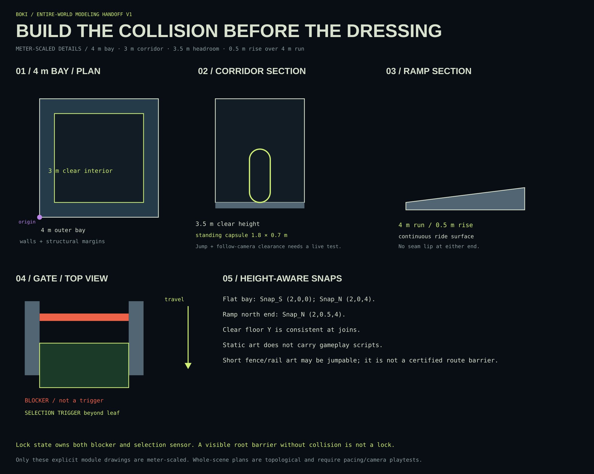

New dimensions and budgets are authoring proposals. No mesh export, Unity scene assembly, Figma import, gameplay pacing or Windows performance result is claimed. Existing Unity scenes/prefabs and the character pack remain unchanged.